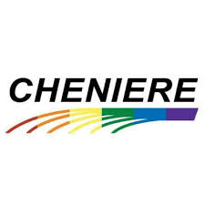
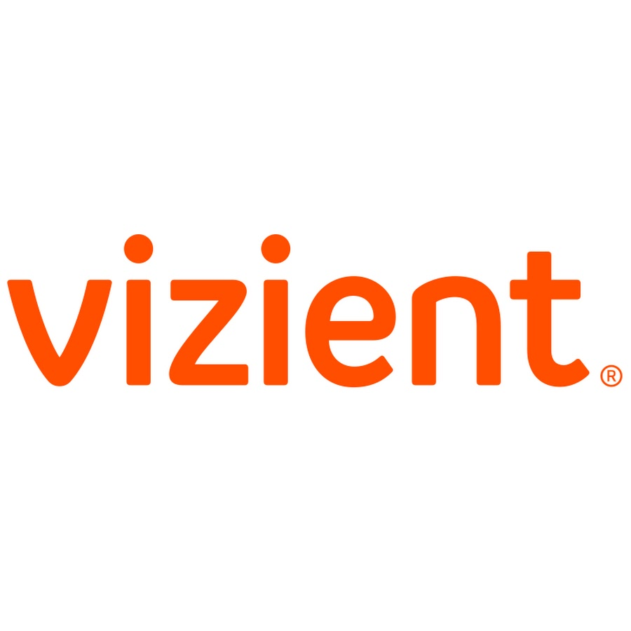

Cloud Migration, Data ingestion, Data curation, Data Movemenet, Performance Optimization
Spearheaded a cloud migration initiative, successfully converting SAS scripts to efficient and optimized PySpark scripts using Databricks
Designed and implemented data models for Credit protection applcations
Automated data pipeline with ADF orchestration for seamless delivery of data to business users
Performed code reviews and implemented better coding standards to provide clean to business
Used spark optimization techniques to improve performance of more than 30 transforms
Developed and implemented data quality checks to identify and resolve data inconsistencies and errors
Data Engineer
April 2021 to August 2022
Cloud Migration, Workflows, PySpark scripting
Successfully converted 120 Netezza scripts to PySpark on Databricks, improving data processing efficiency and leveraging the power of distributed computing for enhanced performance
Collaborated with cross-functional teams, including data scientists, analysts, and business stakeholders, to align data initiatives with overall business objectives
Data Engineer
November 2020 to April 2021
Data Virtualization, CCPA, Tableau, BI, Data Governance, Data Security
Built a semantic data layer with disparate and diverse data sources such as Json, XML, SQL, csv
Provided technical guidance and support to marketing team members, enabling them to leverage data effectively for campaign
optimization and decision-making in building CCPA application

BI Engineer - Contract
September 2019 to March 2020
Denodo, Tableau, REST API, SOAP API
Developed REST API’s and established row level security for tables and views and used OAuth2.0 and Kerberos to enable
• Single sign on

BI Engineer - Contract
September 2019 to March 2020
Denodo, Tableau, REST API, SOAP API
Developed a Data virtualization solution by integrating various different disparate data source such as Oracle, Sql Server, Json data and by creating abstract data layers